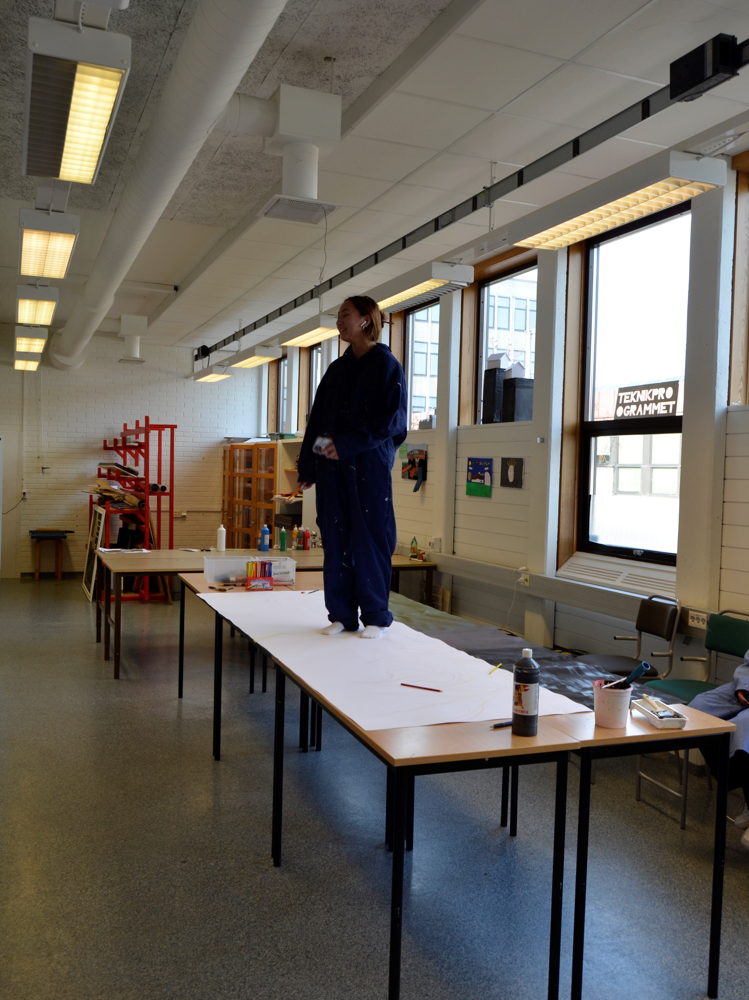
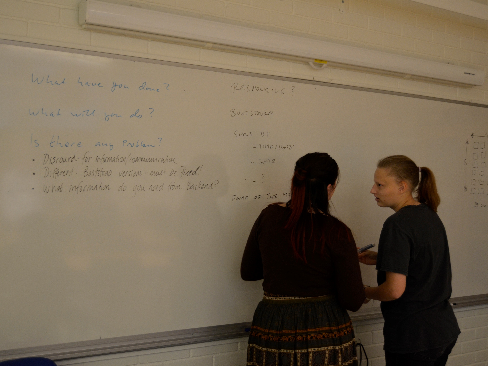
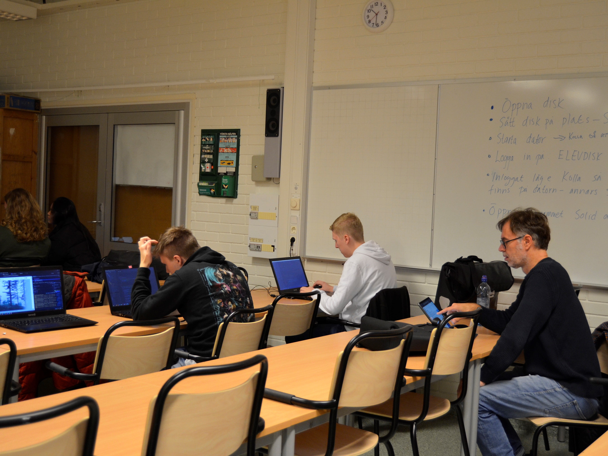
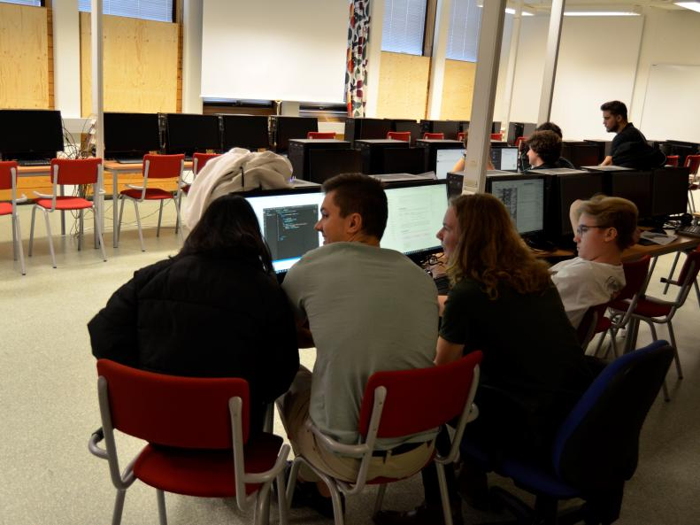
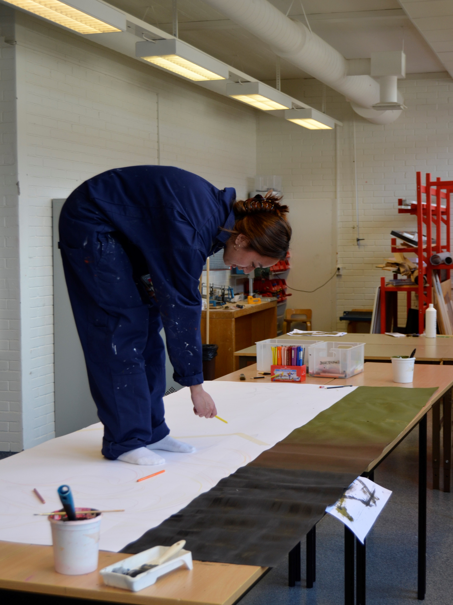
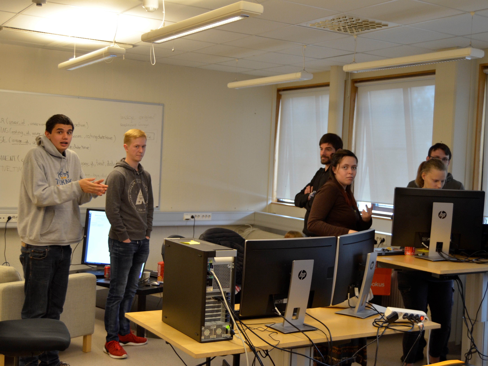

About us
All together we are a group of around 40 students in between the ages of 16-21 and we are being supported by 6 teachers from the two different schools.
About the project
We are a group of about 40 students from Germany and Sweden, our project is a collaboration between the schools Teknikum in Växjö (Sweden) and August-Griese -Berufskolleg in Löhne (Germany). We are funded by the EU and our goal is to raise awareness of the changing climate as well as inspire the user to make environmentally friendly choices. We strive to develop this webpage to its fullest extent but as of right now this project is still in development.
German students
The germans students working on this project come from the August-Griese-Berufskolleg in Löhne and the students are studying for their general university entrance qualification with the main focus on information technology, this also gives the students the chance to work as a technical assistant while in school.
Swedish students
The Swedish students participating in this project are from Teknikum in Växjö and the Swedish students are studying for their general university entrance qualification. The students from Sweden are studying design as well as programming which broadens the thing they can add to a project like this.
Fame
Fame is to be sustainable! If you are sustaining you act in a way which allows you children and grandchildren to live a life like yourself have been able to live. That means you are thinking about how you can use limited materials without wasting them.
Shame
Shame is the opposite of fame! That means you don’t care if your offspring have the same opportunities in life as you had. You are either consciously overconsuming limited resources, producing too much CO2 that our environment can’t handle in a good way.
Goals
Our goal is to show the public what fame and shame is to get attention to our webpage, encourage the public to help us raise awareness and lastly protect our world!